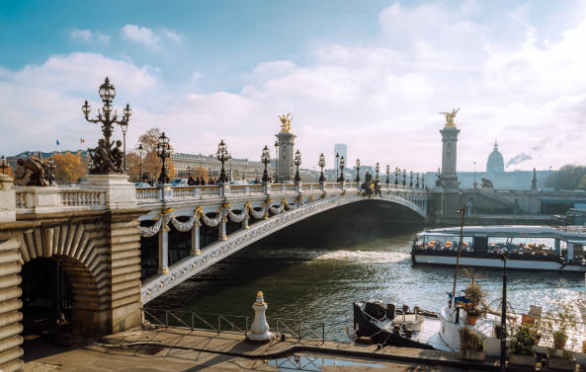
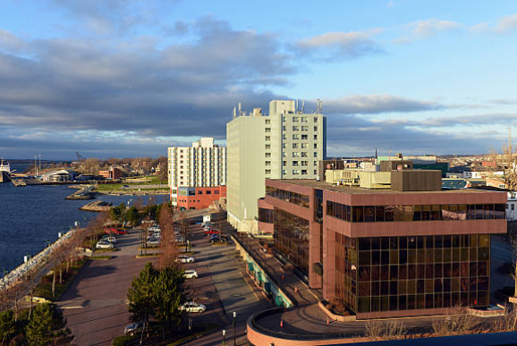
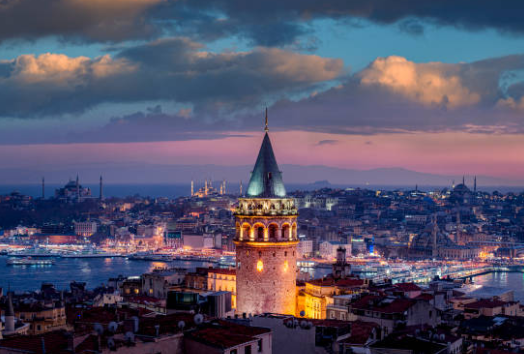
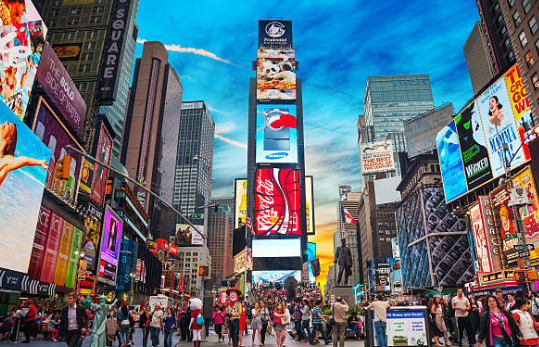

Genel Bakış: Paris, Fransa’nın başkenti ve moda, sanat ile romantizmin dünya çapındaki simgesidir. Eyfel Kulesi, Louvre Müzesi ve Seine Nehri gibi ikonik yerleriyle milyonlarca turisti kendine çeker.
Aktivite: Enjoy a Seine River cruise, visit charming neighborhoods like Montmartre, and indulge in French cuisine at local bistros.
Genel Bakış: Sydney boasts stunning beaches, iconic landmarks like the Sydney Opera House, and a vibrant arts scene.
Aktivite: Explore Bondi Beach, take a ferry to Manly, and visit Taronga Zoo for a close encounter with Australian wildlife.
Genel Bakış: İstanbul, Türkiye'nin en büyük ve en kalabalık şehirlerinden biridir. Asya ve Avrupa kıtalarını birbirine bağlayan eşsiz konumuyla tarih boyunca birçok medeniyete ev sahipliği yapmıştır. Boğazı, tarihi yapıları ve kültürel zenginlikleriyle her yıl milyonlarca turisti cezbetmektedir.
Aktivite: Boğaz turu yaparak şehrin eşsiz manzarasını denizden izleyebilirsin. Tarihi yerleri gezmek, özellikle Ayasofya, Topkapı Sarayı ve Sultanahmet Camii gibi önemli yapıları görmek oldukça keyiflidir. Kapalıçarşı’da alışveriş yaparak hem hediyelik eşyalar alabilir hem de geleneksel atmosferi deneyimleyebilirsin..
Genel Bakış: The Big Apple is known for its skyline, diverse neighborhoods, and cultural institutions. Key attractions include Times Square, Central Park, and the Statue of Liberty.
Aktivite: Catch a Broadway show, visit world-class museums like the Met, and explore the food scene in neighborhoods like Chinatown and Little Italy.
Discover beautiful places to visit and create unforgettable memories.